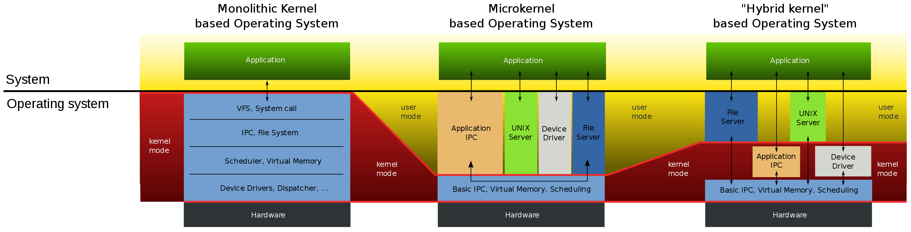

working tips
- Tips
✨✨✨You can Edit this Article on Github site将 ssr 转换为 http 代理
前景概要：我用的魔改版本的 ssr ，不带 http proxy，但是我需要在 terminal 当中使用代理。而且公司原因完全没有 sudo 权限，brew 也废掉了。但是本地 git 是可以通过 sock5 代理的。
我知道可以通过 proxychains4 或者 proxychains-ng 可以实现。也由于懒不想换 ss 或者 v2ray，而且由于 mac sip 的原因没法成功，主要还是没有 sudo 权限。
找了好久，查到了解决办法，利用这个库 polipo 是可以实现所需要的功能，具体步骤如下。
#!/usr/bin/env bash
# 下载 polipo 源码本地编译
git clone https://github.com/jech/polipo.git
cd polipo && make
# 设置 socks5 代理自动给 http proxy 的端口
./polipo socksParentProxy=localhost:1086 &
# 默认的 http proxy 端口为 8123，可以参照下面的 wiki 来配置 config file
export http_proxy="http://127.0.0.1:8123"; export HTTP_PROXY="http://127.0.0.1:8123"; export https_proxy="http://127.0.0.1:8123"; export HTTPS_PROXY="http://127.0.0.1:8123"
# 将会得到代理服务器的地址
curl cip.cc
reference
本地跑 ssr 服务 或者 ss 服务
ssr 和 ss 本质上是一些加密算法协议，所以除了官方提供的源代码、软件，也有很多第三方的实现
目前我看过的一些版本都是 go 语言的实现，由于 ssr 并没有写全如何调用，所有手动解码 socket 转发到 ssr 上了
相关 go 代码如下：
package main
import (
"fmt"
"log"
"net"
"net/url"
"os"
"strconv"
"time"
"github.com/sun8911879/shadowsocksR"
"github.com/sun8911879/shadowsocksR/tools/leakybuf"
"github.com/sun8911879/shadowsocksR/tools/socks"
)
var (
debugLog = log.New(os.Stdout, "[DEBUG] ", log.Ltime)
debug = true
readTimeout = 600 * time.Second
)
// SSInfo fields that shadowsocks/shadowsocksr used only
type SSInfo struct {
SSRInfo
EncryptMethod string
EncryptPassword string
}
// SSRInfo fields that shadowsocksr used only
type SSRInfo struct {
Obfs string
ObfsParam string
ObfsData interface{}
Protocol string
ProtocolParam string
ProtocolData interface{}
}
// BackendInfo all fields that a backend used
type BackendInfo struct {
SSInfo
Address string
Type string
}
func main() {
// 这里填写你自己的 ssr 服务器
bi := &BackendInfo{
Address: "",
Type: "ssr",
SSInfo: SSInfo{
EncryptMethod: "",
EncryptPassword: "",
SSRInfo: SSRInfo{
Protocol: "",
ProtocolParam: "",
Obfs: "",
ObfsParam: "",
},
},
}
bi.Listen()
}
func (bi *BackendInfo) Listen() {
// 默认 8082
listener, err := net.Listen("tcp", "0.0.0.0:8082")
if err != nil {
panic(err)
}
for {
localConn, err := listener.Accept()
if err != nil {
continue
}
go bi.Handle(localConn)
}
}
func (bi *BackendInfo) Handle(src net.Conn) {
// patch start
closed := false
host, port := getRequest(src)
if debug {
fmt.Println("ready to proxy for", host, port)
}
rawAddr := socks.ParseAddr(host + ":" + port)
fmt.Println(rawAddr)
_, err := src.Write([]byte{0x05, 0x00, 0x00, 0x01, 0x00, 0x00, 0x00, 0x00, 0x08, 0x43})
if err != nil {
fmt.Println("send connection confirmation:", err)
return
}
dst, err := bi.DialSSRConn(rawAddr)
defer func() {
if !closed {
src.Close()
}
}()
if err != nil {
log.Println("Failed connect to shadowsocksr server")
return
}
go bi.Pipe(src, dst)
bi.Pipe(dst, src)
closed = true
if debug {
debugLog.Println("closed connection to", host, port)
}
}
func getRequest(client net.Conn) (host string, port string) {
if client == nil {
return
}
//defer client.Close()
var b [1024]byte
n, err := client.Read(b[:])
if err != nil {
log.Println(err)
return
}
if b[0] == 0x05 { //只处理Socks5协议
//客户端回应：Socks服务端不需要验证方式
client.Write([]byte{0x05, 0x00})
n, err = client.Read(b[:])
var host, port string
switch b[3] {
case 0x01: //IP V4
host = net.IPv4(b[4], b[5], b[6], b[7]).String()
case 0x03: //域名
host = string(b[5 : n-2]) //b[4]表示域名的长度
case 0x04: //IP V6
host = net.IP{b[4], b[5], b[6], b[7], b[8], b[9], b[10], b[11], b[12], b[13], b[14], b[15], b[16], b[17], b[18], b[19]}.String()
}
port = strconv.Itoa(int(b[n-2])<<8 | int(b[n-1]))
return host, port
} else {
fmt.Println("只处理Socks5协议")
return
}
}
func (bi *BackendInfo) DialSSRConn(rawaddr socks.Addr) (net.Conn, error) {
u := &url.URL{
Scheme: bi.Type,
Host: bi.Address,
}
v := u.Query()
v.Set("encrypt-method", bi.EncryptMethod)
v.Set("encrypt-key", bi.EncryptPassword)
v.Set("obfs", bi.Obfs)
v.Set("obfs-param", bi.ObfsParam)
v.Set("protocol", bi.Protocol)
v.Set("protocol-param", bi.ProtocolParam)
u.RawQuery = v.Encode()
ssrconn, err := shadowsocksr.NewSSRClient(u)
if err != nil {
return nil, fmt.Errorf("connecting to SSR server failed :%v", err)
}
if bi.ObfsData == nil {
bi.ObfsData = ssrconn.IObfs.GetData()
}
ssrconn.IObfs.SetData(bi.ObfsData)
if bi.ProtocolData == nil {
bi.ProtocolData = ssrconn.IProtocol.GetData()
}
ssrconn.IProtocol.SetData(bi.ProtocolData)
if _, err := ssrconn.Write(rawaddr); err != nil {
ssrconn.Close()
return nil, err
}
return ssrconn, nil
}
// PipeThenClose copies data from src to dst, closes dst when done.
func (bi *BackendInfo) Pipe(src, dst net.Conn) error {
buf := leakybuf.GlobalLeakyBuf.Get()
for {
src.SetReadDeadline(time.Now().Add(readTimeout))
n, err := src.Read(buf)
// read may return EOF with n > 0
// should always process n > 0 bytes before handling error
if n > 0 {
// Note: avoid overwrite err returned by Read.
if _, err := dst.Write(buf[0:n]); err != nil {
break
}
}
if err != nil {
// Always "use of closed network connection", but no easy way to
// identify this specific error. So just leave the error along for now.
// More info here: https://code.google.com/p/go/issues/detail?id=4373
break
}
}
leakybuf.GlobalLeakyBuf.Put(buf)
dst.Close()
return nil
}
接下来添加 bash alias 就可以了：
alias ssr="go run ${你的 go main 文件地址} &"
alias ssr-on="networksetup -setsocksfirewallproxy "Wi-Fi" localhost 8082"
alias ssr-off="networksetup -setsocksfirewallproxy "Wi-Fi" '' "
reference
no-cache 和 no-store 和 max-age=0
结合《图解 HTTP》这本书上讲到的两者的区别：
no-cache 从字面意义上很容易误解为不缓存，但是 no-cache 代表不缓存过期的资源，缓存会向服务器进行有效处理确认之后处理资源，更确切的说，no-cache 应该是
do-not-serve-from-cache-without-revalidation
no-cache 和 max-age=0 基本上是等效
no-cache 可以在本地、可代理服务器缓存，其目的就是为了防止从缓存中获取过期的资源，即和服务端验证 etag 或者 last-modified，正常情况下返回 304 或者 200
no-store 才是真正的不进行缓存，正常情况下只会返回 200
reference
git 对文件名大小写敏感
git 默认对文件名大小写不敏感，需要配置：git config core.ignorecase false
内核
内核主要分为：
集成式核心、宏内核[https://en.wikipedia.org/wiki/Monolithic_kernel] Monolithic kernel linux
微内核 Micro kernel MINIX 3、Fuchsia OS、L4
混合内核[https://zh.wikipedia.org/wiki/%E6%B7%B7%E5%90%88%E6%A0%B8%E5%BF%83] Hybird Kernel OSX、NT

Linus 还就微内核和宏内核的问题和 Andy 论战过: 塔能鲍姆-托瓦兹辩论
单核结构正倾向于设计不容易出错，所以它的发展会比微内核结构更迅速些。两个阵营中都有成功的案例。微核经常被用于机器人和医疗器械的嵌入式设计中，因为它的系统的关键部分都处在相互分开的，被保护的存储空间中。这对于单核设计来说是不可能的，就算它采用了运行时加载模块的方式。
微内核做小，比如只有进程间通信，任务调度，时钟中断，其它全部都是进程实现，内核也是一个进程。进程之间不共享状态，需要通过 IPC 通信。IPC 的性能也有待提高。
而且通过上面的 Kernel 图我们可以看到，有一个应用程序想要请求操作系统的服务，这个服务的处理同时涉及到进程管理、存储管理、设备管理 这时候微内核的劣势就出来了，需要频繁的在用户态和内核态之间交换，频繁 system call
从开销上计算, 函数调用<<系统调用<进程间通信(IPC)
宏内核代码庞大，复杂度，维护成本都很高，但是主要功能都在内核态，所以性能很高。
微内核的代码大大的简化(少去多半的驱动代码),适合一些嵌入式设备，维护成本下降, 只要提供一个合理的驱动接口即可，但是会频繁用户态和内核态切换，效率会很低。
实际上当硬件性能足够高、优化较好，微内核和宏内核之间的性能差距也很小，L4 就是一个例子。
Node.js readline & async iteration:
直接用 Node 执行下面的代码片段，source
const fs = require('fs')
const { createInterface: ci } = require('readline')
async function logLines(ls) {
for await (const l of ls) {
console.log(`Received: ${l}`)
}
}
const rl = ci({ input: process.stdin, output: process.stdout })
logLines(rl)